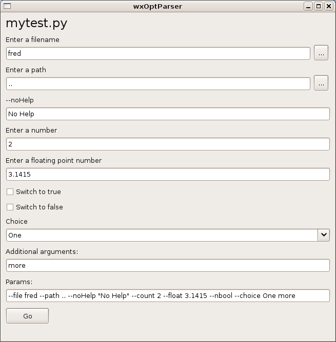

''Don't limit yourself to the command line.''
wxOptParse is a Python program that brings up a graphical representation of the options that another python program has for the command line, via the optparse module.
What this means is that if if you have a program that uses optparse you can click on checkboxes, edit boxes, combo boxes, etc. instead of using the command line.
So instead of this:
usage: mytest.py [options]
options:
-h, --help show this help message and exit
-f FILENAME, --file=FILENAME
Enter a filename
-p PATH, --path=PATH Enter a path
-2 FILENAME2, --noHelp=FILENAME2
-n NUMBER, --count=NUMBER
Enter a number
-m FLOAT, --float=FLOAT
Enter a floating point number
-b, --bool Switch to true
--nbool Switch to false
--choice=CHOICE Choice
You get
Choose one of the following methods. In all cases you probably need to run as root.
easy_install.py wxoptparse
easy_install.py wxOptParse-0.1.2-py2.4.egg
easy_install.py wxOptParse-0.1.2.zip
unzip wxOptParse-0.1.2.zip cd wxOptParse-0.1.2 python setup.py install
If you want to run your program you should be able to type:
$ wxoptparse myprogram.py
Assuming your program is called myprogram.py
There's a sample program installed called wxFind which runs the GNU find command, if available. The source code shows you how it is done. Unfortunately, GNU's find doesn't use the standard style of parameters so some handling of the parameters needs to be done, but it is still quite useful.
This project's homepage http://developer.berlios.de/projects/wxoptparse/
The Wiki is at http://openfacts.berlios.de/index-en.phtml?title=wxOptParse
You can access via Subversion with:
svn checkout svn://svn.berlios.de/wxoptparse/trunk
configparse: an optparse extension module for configuration file parsing. http://www.gustaebel.de/lars/configparse/
My web blog: http://scottkirkwood.blogspot.com/
My homepage (gathering cobwebs) http://forusers.com/